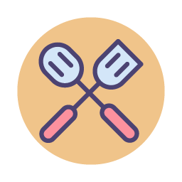

Vitória Batistoti
SOBRE
Vitória Batistoti é estudante de jornalismo e aluna do bootcamp de front-end da {reprograma}. Apesar de muito gostar de escrever, somente aos 23 anos de idade -- e no último semestre da faculdade -- ela descobriu que não quer ser jornalista. Tudo bem. Ainda há muito o que ela quer ser: dona de muitos cachorros adotados, chefe de cozinha vegana, guitarrista de uma banda emo e desenvolvedora de jogos indie.
Meus Hobbies
O que gosto de fazer
-

Jogar joguinhos digitais
-

Cozinhar lanchos veganos
-

Tentar tocar guitarra
-

Passar vergonha no karaokê
-

Brincar de tênis de mesa
-

Fazer tatuagens